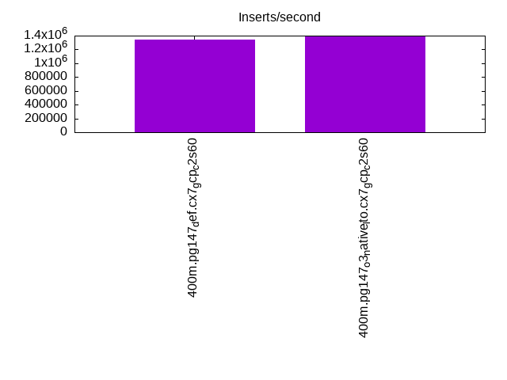
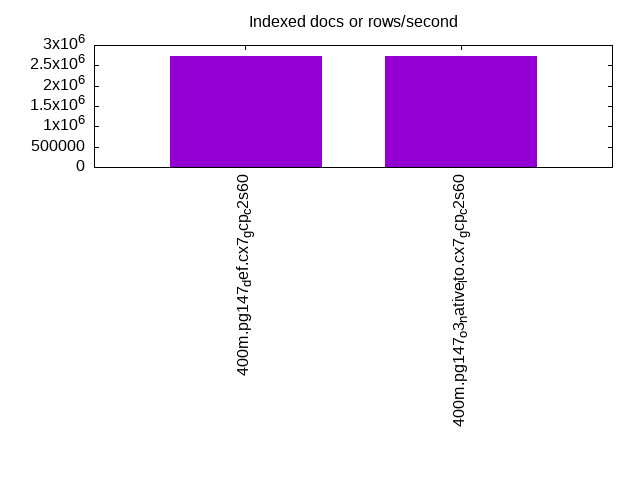
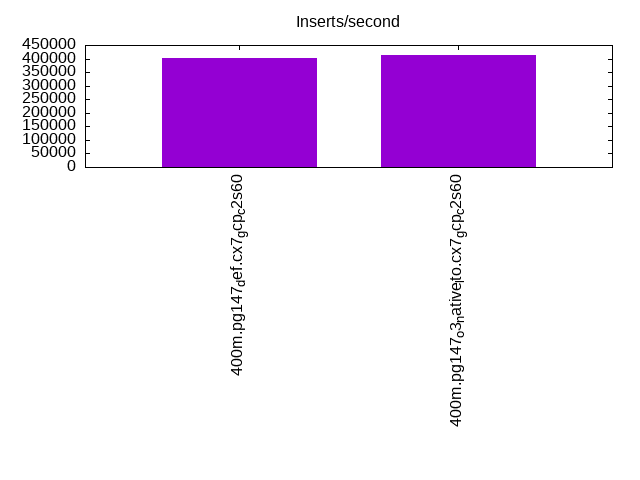
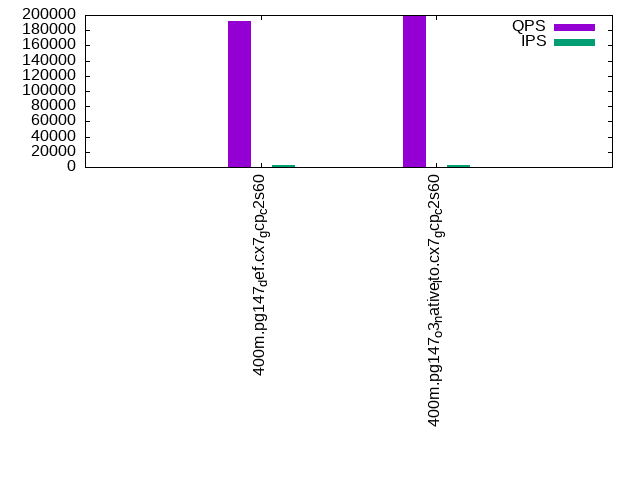
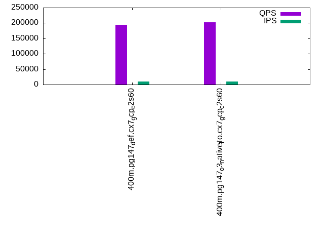
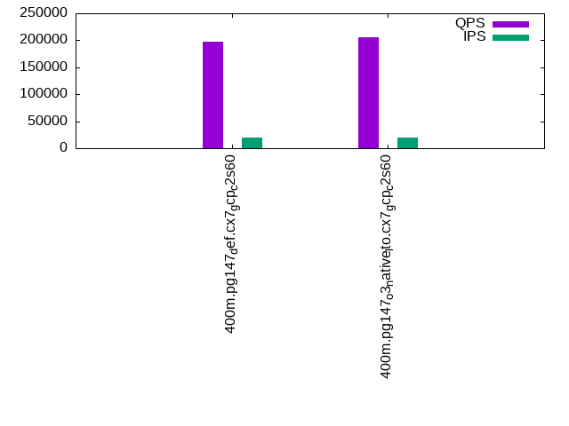

This is a report for the insert benchmark with 400M docs and 20 client(s). It is generated by scripts (bash, awk, sed) and Tufte might not be impressed. An overview of the insert benchmark is here and a short update is here. Below, by DBMS, I mean DBMS+version.config. An example is my8020.c10b40 where my means MySQL, 8020 is version 8.0.20 and c10b40 is the name for the configuration file.
The test server is a c2-standard-60 from GCP with 30 cores, hyperthreading disabled, 240G RAM and 3T from XFS and SW RAID 0 striped over 8 local NVMe drives. The benchmark was run with 20 clients and there were 1 or 2 connections per client (1 for queries, 1 for inserts). The benchmark loads 400M rows without secondary indexes, creates secondary indexes, loads another 400M rows then does 3 read+write tests for one hour each that do queries as fast as possible with 100, 500 and then 1000 writes/second/client concurrent with the queries. Each read-write test runs for 1800 seconds. The test was configured to use a table per client. The database is cached by the storage engine and the only IO is for writes. Clients and the DBMS share one server. The per-database configs are in the per-database subdirectories here.
The tested DBMS are:
The numbers are inserts/s for l.i0 and l.i1, indexed docs (or rows) /s for l.x and queries/s for q*.2. The values are the average rate over the entire test for inserts (IPS) and queries (QPS). The range of values for IPS and QPS is split into 3 parts: bottom 25%, middle 50%, top 25%. Values in the bottom 25% have a red background, values in the top 25% have a green background and values in the middle have no color. A gray background is used for values that can be ignored because the DBMS did not sustain the target insert rate. Red backgrounds are not used when the minimum value is within 80% of the max value.
| dbms | l.i0 | l.x | l.i1 | q100.1 | q500.1 | q1000.1 |
|---|---|---|---|---|---|---|
| 400m.pg147_def.cx7_gcp_c2s60 | 1337793 | 2721769 | 403226 | 192638 | 194477 | 197417 |
| 400m.pg147_o3_native_lto.cx7_gcp_c2s60 | 1393728 | 2721769 | 413223 | 199384 | 201572 | 205260 |
This lists the average rate of inserts/s for the tests that do inserts concurrent with queries. For such tests the query rate is listed in the table above. The read+write tests are setup so that the insert rate should match the target rate every second. Cells that are not at least 95% of the target have a red background to indicate a failure to satisfy the target.
| dbms | q100.1 | q500.1 | q1000.1 |
|---|---|---|---|
| pg147_def.cx7_gcp_c2s60 | 1976 | 9885 | 19769 |
| pg147_o3_native_lto.cx7_gcp_c2s60 | 1976 | 9885 | 19769 |
| target | 2000 | 10000 | 20000 |
l.i0: load without secondary indexes. Graphs for performance per 1-second interval are here.
Average throughput:
Insert response time histogram: each cell has the percentage of responses that take <= the time in the header and max is the max response time in seconds. For the max column values in the top 25% of the range have a red background and in the bottom 25% of the range have a green background. The red background is not used when the min value is within 80% of the max value.
| dbms | 256us | 1ms | 4ms | 16ms | 64ms | 256ms | 1s | 4s | 16s | gt | max |
|---|---|---|---|---|---|---|---|---|---|---|---|
| pg147_def.cx7_gcp_c2s60 | 57.410 | 41.608 | 0.939 | 0.009 | 0.019 | 0.014 | 0.001 | 1.072 | |||
| pg147_o3_native_lto.cx7_gcp_c2s60 | 58.688 | 40.467 | 0.793 | 0.018 | 0.020 | 0.014 | 0.765 |
Performance metrics for the DBMS listed above. Some are normalized by throughput, others are not. Legend for results is here.
ips qps rps rmbps wps wmbps rpq rkbpq wpi wkbpi csps cpups cspq cpupq dbgb1 dbgb2 rss maxop p50 p99 tag 1337793 0 0 0.0 1741.9 442.7 0.000 0.000 0.001 0.339 225996 59.5 0.169 13 38.3 103.4 NA 1.072 76117 9490 400m.pg147_def.cx7_gcp_c2s60 1393728 0 0 0.0 1837.9 462.7 0.000 0.000 0.001 0.340 242816 59.7 0.174 13 38.3 103.4 NA 0.765 78315 9689 400m.pg147_o3_native_lto.cx7_gcp_c2s60
l.x: create secondary indexes.
Average throughput:
Performance metrics for the DBMS listed above. Some are normalized by throughput, others are not. Legend for results is here.
ips qps rps rmbps wps wmbps rpq rkbpq wpi wkbpi csps cpups cspq cpupq dbgb1 dbgb2 rss maxop p50 p99 tag 2721769 0 9809 103.5 3270.8 826.3 0.004 0.039 0.001 0.311 106770 26.8 0.039 3 73.5 171.7 0.0 0.181 NA NA 400m.pg147_def.cx7_gcp_c2s60 2721769 0 5266 95.7 3202.6 801.5 0.002 0.036 0.001 0.302 106331 26.7 0.039 3 73.5 170.7 0.0 0.249 NA NA 400m.pg147_o3_native_lto.cx7_gcp_c2s60
l.i1: continue load after secondary indexes created. Graphs for performance per 1-second interval are here.
Average throughput:
Insert response time histogram: each cell has the percentage of responses that take <= the time in the header and max is the max response time in seconds. For the max column values in the top 25% of the range have a red background and in the bottom 25% of the range have a green background. The red background is not used when the min value is within 80% of the max value.
| dbms | 256us | 1ms | 4ms | 16ms | 64ms | 256ms | 1s | 4s | 16s | gt | max |
|---|---|---|---|---|---|---|---|---|---|---|---|
| pg147_def.cx7_gcp_c2s60 | 95.876 | 2.726 | 1.359 | 0.025 | 0.014 | 0.793 | |||||
| pg147_o3_native_lto.cx7_gcp_c2s60 | 0.003 | 96.045 | 2.557 | 1.354 | 0.029 | 0.012 | nonzero | 1.058 |
Performance metrics for the DBMS listed above. Some are normalized by throughput, others are not. Legend for results is here.
ips qps rps rmbps wps wmbps rpq rkbpq wpi wkbpi csps cpups cspq cpupq dbgb1 dbgb2 rss maxop p50 p99 tag 403226 0 5408 40.8 3378.2 520.4 0.013 0.104 0.008 1.322 300791 52.2 0.746 39 163.3 354.1 NA 0.793 25631 1749 400m.pg147_def.cx7_gcp_c2s60 413223 0 5169 46.3 3193.8 527.4 0.013 0.115 0.008 1.307 305777 51.6 0.740 37 163.3 354.9 0.0 1.058 26332 1798 400m.pg147_o3_native_lto.cx7_gcp_c2s60
q100.1: range queries with 100 insert/s per client. Graphs for performance per 1-second interval are here.
Average throughput:
Query response time histogram: each cell has the percentage of responses that take <= the time in the header and max is the max response time in seconds. For max values in the top 25% of the range have a red background and in the bottom 25% of the range have a green background. The red background is not used when the min value is within 80% of the max value.
| dbms | 256us | 1ms | 4ms | 16ms | 64ms | 256ms | 1s | 4s | 16s | gt | max |
|---|---|---|---|---|---|---|---|---|---|---|---|
| pg147_def.cx7_gcp_c2s60 | 99.973 | 0.020 | 0.006 | 0.001 | nonzero | 0.024 | |||||
| pg147_o3_native_lto.cx7_gcp_c2s60 | 99.976 | 0.017 | 0.006 | 0.001 | nonzero | 0.034 |
Insert response time histogram: each cell has the percentage of responses that take <= the time in the header and max is the max response time in seconds. For max values in the top 25% of the range have a red background and in the bottom 25% of the range have a green background. The red background is not used when the min value is within 80% of the max value.
| dbms | 256us | 1ms | 4ms | 16ms | 64ms | 256ms | 1s | 4s | 16s | gt | max |
|---|---|---|---|---|---|---|---|---|---|---|---|
| pg147_def.cx7_gcp_c2s60 | 97.910 | 1.831 | 0.260 | 0.040 | |||||||
| pg147_o3_native_lto.cx7_gcp_c2s60 | 95.801 | 3.460 | 0.729 | 0.010 | 0.080 |
Performance metrics for the DBMS listed above. Some are normalized by throughput, others are not. Legend for results is here.
ips qps rps rmbps wps wmbps rpq rkbpq wpi wkbpi csps cpups cspq cpupq dbgb1 dbgb2 rss maxop p50 p99 tag 1976 192638 0 0.0 3523.7 83.8 0.000 0.000 1.783 43.406 687254 63.1 3.568 98 163.9 311.9 0.0 0.024 9478 9174 400m.pg147_def.cx7_gcp_c2s60 1976 199384 0 0.0 3561.0 85.1 0.000 0.000 1.802 44.107 710578 62.6 3.564 94 163.9 323.4 0.0 0.034 9909 9509 400m.pg147_o3_native_lto.cx7_gcp_c2s60
q500.1: range queries with 500 insert/s per client. Graphs for performance per 1-second interval are here.
Average throughput:
Query response time histogram: each cell has the percentage of responses that take <= the time in the header and max is the max response time in seconds. For max values in the top 25% of the range have a red background and in the bottom 25% of the range have a green background. The red background is not used when the min value is within 80% of the max value.
| dbms | 256us | 1ms | 4ms | 16ms | 64ms | 256ms | 1s | 4s | 16s | gt | max |
|---|---|---|---|---|---|---|---|---|---|---|---|
| pg147_def.cx7_gcp_c2s60 | 99.910 | 0.057 | 0.029 | 0.004 | nonzero | 0.057 | |||||
| pg147_o3_native_lto.cx7_gcp_c2s60 | 99.915 | 0.053 | 0.028 | 0.004 | nonzero | 0.059 |
Insert response time histogram: each cell has the percentage of responses that take <= the time in the header and max is the max response time in seconds. For max values in the top 25% of the range have a red background and in the bottom 25% of the range have a green background. The red background is not used when the min value is within 80% of the max value.
| dbms | 256us | 1ms | 4ms | 16ms | 64ms | 256ms | 1s | 4s | 16s | gt | max |
|---|---|---|---|---|---|---|---|---|---|---|---|
| pg147_def.cx7_gcp_c2s60 | 45.647 | 24.976 | 28.163 | 1.214 | 0.184 | ||||||
| pg147_o3_native_lto.cx7_gcp_c2s60 | 44.914 | 24.447 | 29.331 | 1.308 | 0.207 |
Performance metrics for the DBMS listed above. Some are normalized by throughput, others are not. Legend for results is here.
ips qps rps rmbps wps wmbps rpq rkbpq wpi wkbpi csps cpups cspq cpupq dbgb1 dbgb2 rss maxop p50 p99 tag 9885 194477 0 0.0 6144.0 193.7 0.000 0.000 0.622 20.063 679485 63.7 3.494 98 167.5 269.8 0.0 0.057 9561 9078 400m.pg147_def.cx7_gcp_c2s60 9885 201572 0 0.0 6390.1 196.8 0.000 0.000 0.646 20.389 705063 63.7 3.498 95 167.4 271.7 0.0 0.059 9989 9446 400m.pg147_o3_native_lto.cx7_gcp_c2s60
q1000.1: range queries with 1000 insert/s per client. Graphs for performance per 1-second interval are here.
Average throughput:
Query response time histogram: each cell has the percentage of responses that take <= the time in the header and max is the max response time in seconds. For max values in the top 25% of the range have a red background and in the bottom 25% of the range have a green background. The red background is not used when the min value is within 80% of the max value.
| dbms | 256us | 1ms | 4ms | 16ms | 64ms | 256ms | 1s | 4s | 16s | gt | max |
|---|---|---|---|---|---|---|---|---|---|---|---|
| pg147_def.cx7_gcp_c2s60 | 99.851 | 0.098 | 0.042 | 0.008 | 0.001 | nonzero | 0.088 | ||||
| pg147_o3_native_lto.cx7_gcp_c2s60 | 99.860 | 0.092 | 0.041 | 0.007 | nonzero | nonzero | 0.086 |
Insert response time histogram: each cell has the percentage of responses that take <= the time in the header and max is the max response time in seconds. For max values in the top 25% of the range have a red background and in the bottom 25% of the range have a green background. The red background is not used when the min value is within 80% of the max value.
| dbms | 256us | 1ms | 4ms | 16ms | 64ms | 256ms | 1s | 4s | 16s | gt | max |
|---|---|---|---|---|---|---|---|---|---|---|---|
| pg147_def.cx7_gcp_c2s60 | 57.846 | 21.955 | 19.271 | 0.928 | 0.249 | ||||||
| pg147_o3_native_lto.cx7_gcp_c2s60 | 58.709 | 21.450 | 18.923 | 0.918 | 0.218 |
Performance metrics for the DBMS listed above. Some are normalized by throughput, others are not. Legend for results is here.
ips qps rps rmbps wps wmbps rpq rkbpq wpi wkbpi csps cpups cspq cpupq dbgb1 dbgb2 rss maxop p50 p99 tag 19769 197417 0 0.0 6345.8 270.4 0.000 0.000 0.321 14.009 669807 65.2 3.393 99 179.6 279.1 0.0 0.088 9813 8966 400m.pg147_def.cx7_gcp_c2s60 19769 205260 0 0.0 6299.3 265.5 0.000 0.000 0.319 13.751 697236 64.9 3.397 95 179.6 280.4 0.0 0.086 10216 9398 400m.pg147_o3_native_lto.cx7_gcp_c2s60
l.i0: load without secondary indexes
Performance metrics for all DBMS, not just the ones listed above. Some are normalized by throughput, others are not. Legend for results is here.
ips qps rps rmbps wps wmbps rpq rkbpq wpi wkbpi csps cpups cspq cpupq dbgb1 dbgb2 rss maxop p50 p99 tag 1337793 0 0 0.0 1741.9 442.7 0.000 0.000 0.001 0.339 225996 59.5 0.169 13 38.3 103.4 NA 1.072 76117 9490 400m.pg147_def.cx7_gcp_c2s60 1393728 0 0 0.0 1837.9 462.7 0.000 0.000 0.001 0.340 242816 59.7 0.174 13 38.3 103.4 NA 0.765 78315 9689 400m.pg147_o3_native_lto.cx7_gcp_c2s60
l.x: create secondary indexes
Performance metrics for all DBMS, not just the ones listed above. Some are normalized by throughput, others are not. Legend for results is here.
ips qps rps rmbps wps wmbps rpq rkbpq wpi wkbpi csps cpups cspq cpupq dbgb1 dbgb2 rss maxop p50 p99 tag 2721769 0 9809 103.5 3270.8 826.3 0.004 0.039 0.001 0.311 106770 26.8 0.039 3 73.5 171.7 0.0 0.181 NA NA 400m.pg147_def.cx7_gcp_c2s60 2721769 0 5266 95.7 3202.6 801.5 0.002 0.036 0.001 0.302 106331 26.7 0.039 3 73.5 170.7 0.0 0.249 NA NA 400m.pg147_o3_native_lto.cx7_gcp_c2s60
l.i1: continue load after secondary indexes created
Performance metrics for all DBMS, not just the ones listed above. Some are normalized by throughput, others are not. Legend for results is here.
ips qps rps rmbps wps wmbps rpq rkbpq wpi wkbpi csps cpups cspq cpupq dbgb1 dbgb2 rss maxop p50 p99 tag 403226 0 5408 40.8 3378.2 520.4 0.013 0.104 0.008 1.322 300791 52.2 0.746 39 163.3 354.1 NA 0.793 25631 1749 400m.pg147_def.cx7_gcp_c2s60 413223 0 5169 46.3 3193.8 527.4 0.013 0.115 0.008 1.307 305777 51.6 0.740 37 163.3 354.9 0.0 1.058 26332 1798 400m.pg147_o3_native_lto.cx7_gcp_c2s60
q100.1: range queries with 100 insert/s per client
Performance metrics for all DBMS, not just the ones listed above. Some are normalized by throughput, others are not. Legend for results is here.
ips qps rps rmbps wps wmbps rpq rkbpq wpi wkbpi csps cpups cspq cpupq dbgb1 dbgb2 rss maxop p50 p99 tag 1976 192638 0 0.0 3523.7 83.8 0.000 0.000 1.783 43.406 687254 63.1 3.568 98 163.9 311.9 0.0 0.024 9478 9174 400m.pg147_def.cx7_gcp_c2s60 1976 199384 0 0.0 3561.0 85.1 0.000 0.000 1.802 44.107 710578 62.6 3.564 94 163.9 323.4 0.0 0.034 9909 9509 400m.pg147_o3_native_lto.cx7_gcp_c2s60
q500.1: range queries with 500 insert/s per client
Performance metrics for all DBMS, not just the ones listed above. Some are normalized by throughput, others are not. Legend for results is here.
ips qps rps rmbps wps wmbps rpq rkbpq wpi wkbpi csps cpups cspq cpupq dbgb1 dbgb2 rss maxop p50 p99 tag 9885 194477 0 0.0 6144.0 193.7 0.000 0.000 0.622 20.063 679485 63.7 3.494 98 167.5 269.8 0.0 0.057 9561 9078 400m.pg147_def.cx7_gcp_c2s60 9885 201572 0 0.0 6390.1 196.8 0.000 0.000 0.646 20.389 705063 63.7 3.498 95 167.4 271.7 0.0 0.059 9989 9446 400m.pg147_o3_native_lto.cx7_gcp_c2s60
q1000.1: range queries with 1000 insert/s per client
Performance metrics for all DBMS, not just the ones listed above. Some are normalized by throughput, others are not. Legend for results is here.
ips qps rps rmbps wps wmbps rpq rkbpq wpi wkbpi csps cpups cspq cpupq dbgb1 dbgb2 rss maxop p50 p99 tag 19769 197417 0 0.0 6345.8 270.4 0.000 0.000 0.321 14.009 669807 65.2 3.393 99 179.6 279.1 0.0 0.088 9813 8966 400m.pg147_def.cx7_gcp_c2s60 19769 205260 0 0.0 6299.3 265.5 0.000 0.000 0.319 13.751 697236 64.9 3.397 95 179.6 280.4 0.0 0.086 10216 9398 400m.pg147_o3_native_lto.cx7_gcp_c2s60
Insert response time histogram
256us 1ms 4ms 16ms 64ms 256ms 1s 4s 16s gt max tag 0.000 57.410 41.608 0.939 0.009 0.019 0.014 0.001 0.000 0.000 1.072 pg147_def.cx7_gcp_c2s60 0.000 58.688 40.467 0.793 0.018 0.020 0.014 0.000 0.000 0.000 0.765 pg147_o3_native_lto.cx7_gcp_c2s60
TODO - determine whether there is data for create index response time
Insert response time histogram
256us 1ms 4ms 16ms 64ms 256ms 1s 4s 16s gt max tag 0.000 0.000 95.876 2.726 1.359 0.025 0.014 0.000 0.000 0.000 0.793 pg147_def.cx7_gcp_c2s60 0.000 0.003 96.045 2.557 1.354 0.029 0.012 nonzero 0.000 0.000 1.058 pg147_o3_native_lto.cx7_gcp_c2s60
Query response time histogram
256us 1ms 4ms 16ms 64ms 256ms 1s 4s 16s gt max tag 99.973 0.020 0.006 0.001 nonzero 0.000 0.000 0.000 0.000 0.000 0.024 pg147_def.cx7_gcp_c2s60 99.976 0.017 0.006 0.001 nonzero 0.000 0.000 0.000 0.000 0.000 0.034 pg147_o3_native_lto.cx7_gcp_c2s60
Insert response time histogram
256us 1ms 4ms 16ms 64ms 256ms 1s 4s 16s gt max tag 0.000 0.000 97.910 1.831 0.260 0.000 0.000 0.000 0.000 0.000 0.040 pg147_def.cx7_gcp_c2s60 0.000 0.000 95.801 3.460 0.729 0.010 0.000 0.000 0.000 0.000 0.080 pg147_o3_native_lto.cx7_gcp_c2s60
Query response time histogram
256us 1ms 4ms 16ms 64ms 256ms 1s 4s 16s gt max tag 99.910 0.057 0.029 0.004 nonzero 0.000 0.000 0.000 0.000 0.000 0.057 pg147_def.cx7_gcp_c2s60 99.915 0.053 0.028 0.004 nonzero 0.000 0.000 0.000 0.000 0.000 0.059 pg147_o3_native_lto.cx7_gcp_c2s60
Insert response time histogram
256us 1ms 4ms 16ms 64ms 256ms 1s 4s 16s gt max tag 0.000 0.000 45.647 24.976 28.163 1.214 0.000 0.000 0.000 0.000 0.184 pg147_def.cx7_gcp_c2s60 0.000 0.000 44.914 24.447 29.331 1.308 0.000 0.000 0.000 0.000 0.207 pg147_o3_native_lto.cx7_gcp_c2s60
Query response time histogram
256us 1ms 4ms 16ms 64ms 256ms 1s 4s 16s gt max tag 99.851 0.098 0.042 0.008 0.001 nonzero 0.000 0.000 0.000 0.000 0.088 pg147_def.cx7_gcp_c2s60 99.860 0.092 0.041 0.007 nonzero nonzero 0.000 0.000 0.000 0.000 0.086 pg147_o3_native_lto.cx7_gcp_c2s60
Insert response time histogram
256us 1ms 4ms 16ms 64ms 256ms 1s 4s 16s gt max tag 0.000 0.000 57.846 21.955 19.271 0.928 0.000 0.000 0.000 0.000 0.249 pg147_def.cx7_gcp_c2s60 0.000 0.000 58.709 21.450 18.923 0.918 0.000 0.000 0.000 0.000 0.218 pg147_o3_native_lto.cx7_gcp_c2s60